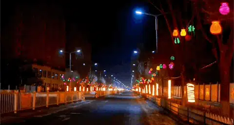
神池是我的家乡。
是山西省西北部的一个小县城。
过年期间，气温低至零下20度附近。
人口只有7万多人。
这也是神池“李白”生活了53年的地方。
李白是我的二爹。
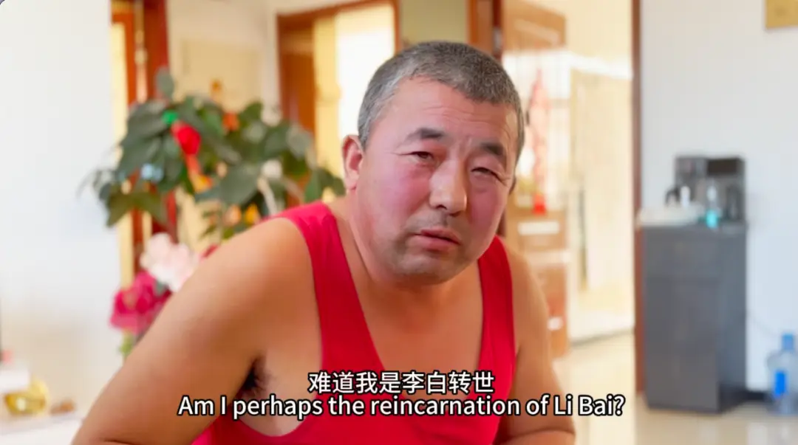
他从小在语文和绘画方面表现出色，却因数理化成绩不佳而放弃中考。
最终成为了一名普通的刷墙工人。

大年三十，我和弟弟将镜头对准他。
从中午12点一直拍摄到初一凌晨5点多。
因此有了《神池李白18时》。
在这个中国人最戏剧化、最浪漫的节日里。
18个小时的记录，呈现了二爹的日常生活与内心世界。
让很多人看到了北方小县城里一场平凡生活里的诗意和坚守。
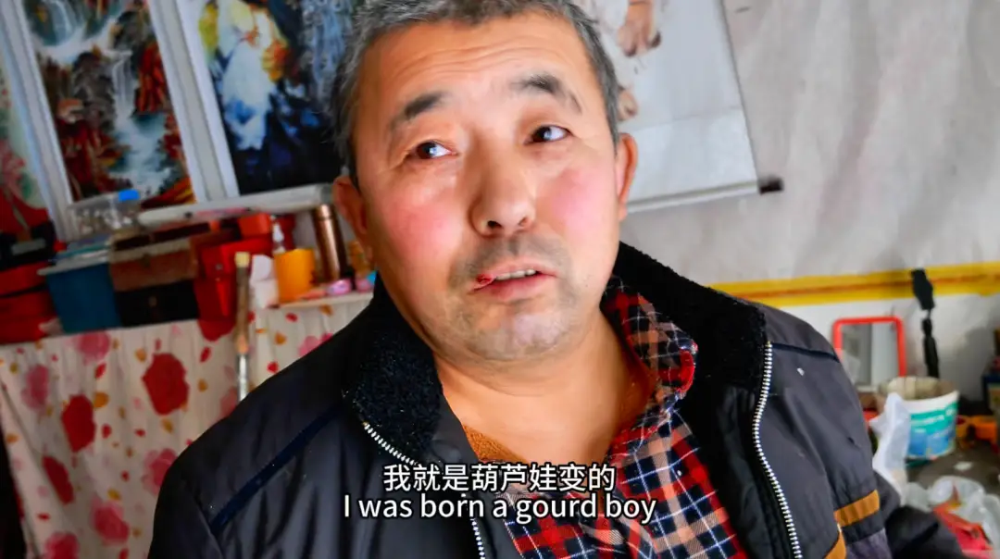
有一个网友在后台留言：
我以为这片寒冷凌烈的土地上
没有炙热的灵魂
可是我今天认识了神池李白
我感谢这片乌托邦 我感谢李白 我感谢你
我会珍惜这个乌托邦
带着我的残疾一般的浪漫 在这个不是很浪漫的世界上
坚持我自己的想法
坚持我活成我想要的样子
我会珍惜我残疾一般的浪漫
我会热爱我的生活
永远不放弃我自己
的确，在快节奏的现代社会，人们往往容易被各种喧嚣所淹没，而忽略了身边那些平凡却充满力量的故事。
《神池李白18时》就是这样一个引人思考并且充满力量的故事。
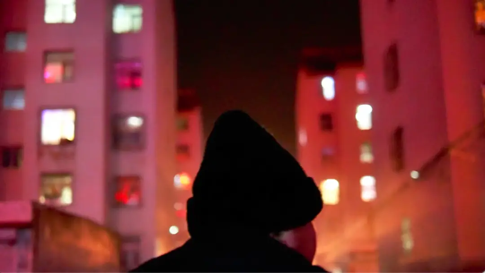
在大家的建议下，我再次对这个纪录片进行了精剪，将片长压缩到了40分钟。
有朋友也非常喜欢这个纪录片，帮忙加了英文字幕，来帮助更多人理解里面的神池话。
在这里表示感谢。
同时，我也会通过这篇文章。
对这场苦重生活里的诗意进行更多的介绍和分享。
-01- 急转弯
李白曾经和我说过。
他是一个超人，拥有一个超能力。
我问他是什么超能力？
他说是急转弯。
这句话一下子点醒了我。
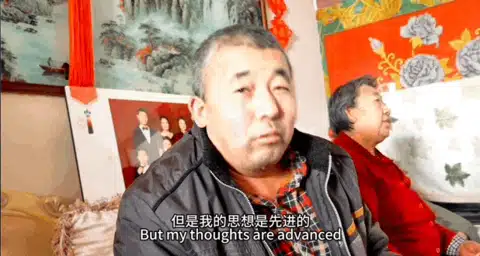
急转弯，这三个字，竟然可以非常精准地概括二爹的独特个性和人生。
在纪录片中，这样的急转弯，到处都是。
比如，二爹说他夜晚梦到李白，并且非常认真的问我，你知不知道，李白是跳河死的？
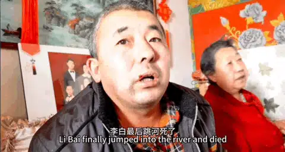
我问他为什么跳河。
他非常认真地进行了思考。
可正当我要听一下他高见的时候。
他却说忘记了。
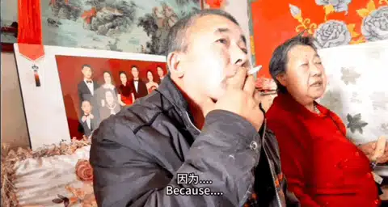
再比如说，他会在以后的人生中翻倍努力。
我问他怎么翻倍努力。
他却非常认真的说他会翻倍的吃饭......
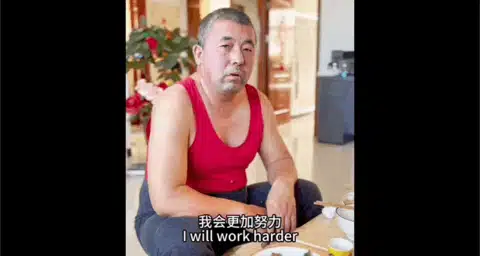
除了这种语言表达上的急转弯。
他在自己作品的阐述上，也是充满了急转弯。
比如面对他花了很多心血画的老虎。
那个老虎栩栩如生，眼睛炯炯有神。
观看过的人都会拍案叫绝。

当介绍这只老虎的时候，二爹也是意气风发。
说这幅画是他最满意的作品，表达了他对未来美好生活的渴望。
当我问他是什么样的渴望的时候。
他却说，虽然表达的是渴望。
但是渴望并不一定能够渴求到。
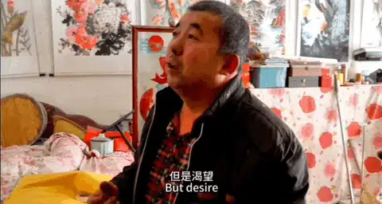
而面对老虎那双炯炯有神的眼睛，我们都会觉得画得非常传神。
可在二爹看来，那只老虎瞪大了眼睛，不知道在看什么。
像是一种渴望，又像是对未来生活的一种迷茫。
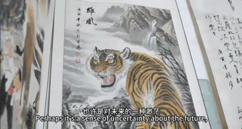
所以在他眼里，他只是一只死老虎。
这种语言、艺术上的急转弯，让二爹充满了幽默和反差。
不过，这种幽默之下，又总能让人感受到一些心酸和悲伤。
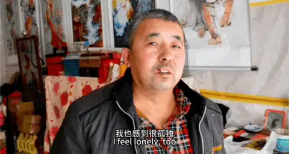
事实上，他的人生也正是因为一个急转弯而变得很不一样。
在他读初中的时候，他学习并不差，甚至在语文和绘画上有着过人的天赋。
但因为偏科。
中考的时候，二爹竟然自己主动放弃了中考。
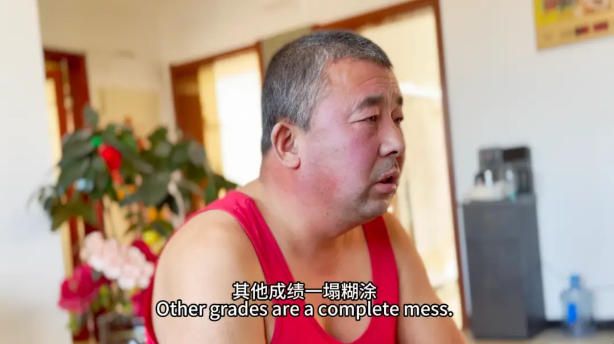
中考那天，在别人在试卷上挥洒的时候，他却在酒精的麻痹下，躲在一个房子里睡着了。
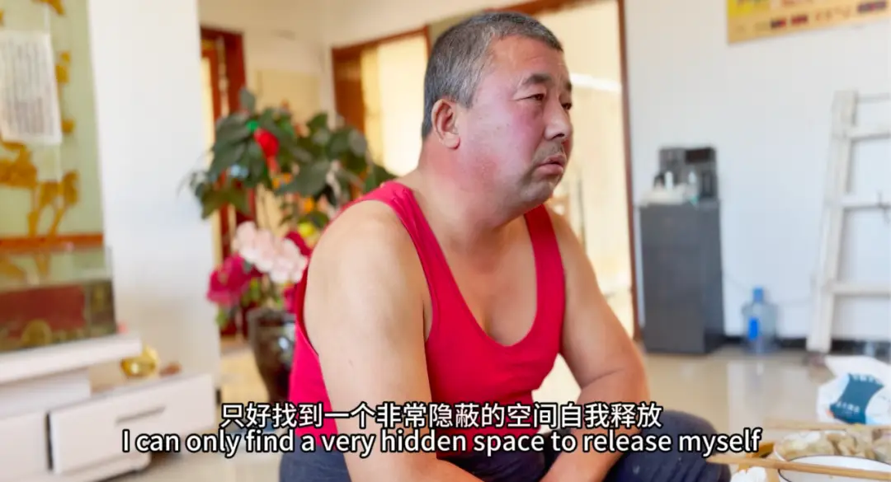
正是这个选择，成为了他人生中的急转弯。
在接下来漫长的年月里，他主要以帮人刷墙来谋生。

拍摄于2021年6月份
这份工作充满了重复和艰辛。
与他形成对比的是。
他的哥哥和弟弟均考入了大学，戴着光环，过着和他完全不同的生活。
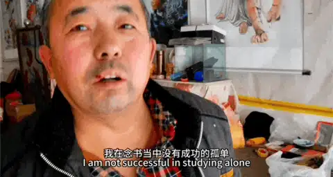
不过，虽然二叔的生活充满了艰辛，但他却始终保持着对生活的热情和对艺术的追求。
一边是苦重的生活。
一边是诗意和艺术。
二爹需要随时从美好的山水画中回到现实去养家糊口。
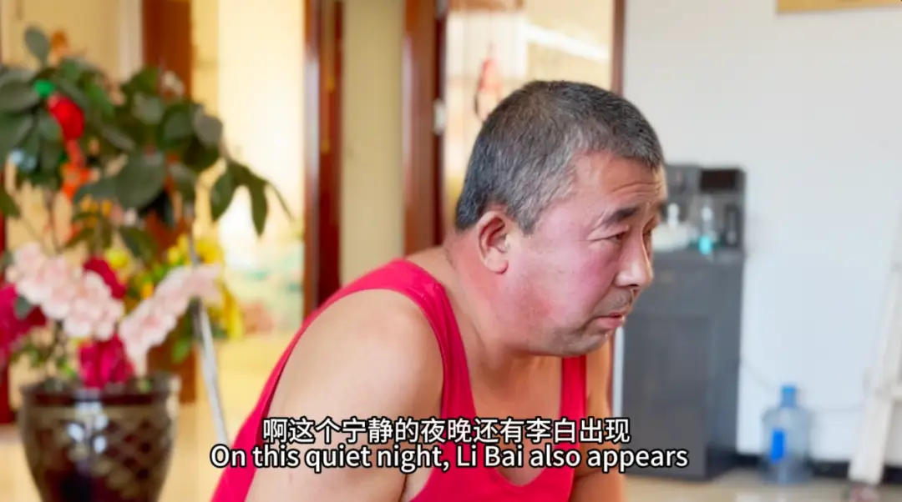
同时他也在点点滴滴的苦重和坚持中，用他的画笔去表达和思考。
这就是专属于二爹的超能力。
一种凛冽人生中被锻造出来的独特个性和风格。
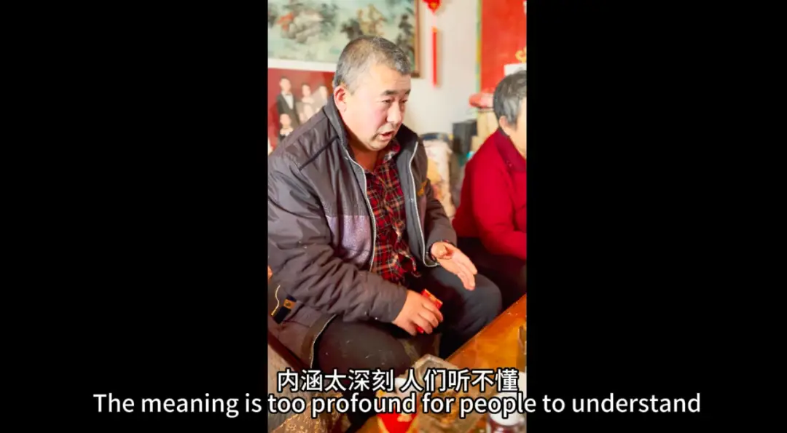
-02- 李白的力量
二爹的才华是毋庸置疑的。
我在纪录片里问他，在这个小县城，没有人懂得欣赏你，怎么办？
二爹的回答很有意思。
他说：这都无关紧要，最重要的是有父母的存在。
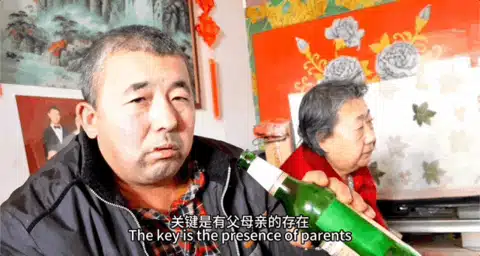
二爹不经意的回答，让人非常触动。
很多艺术家的家庭和人生是非常破碎的。
破碎和悲惨，让他们有了异于常人的经历、表达和思考。
不过，二爹的艺术和内心世界里。
家庭是他的支撑和力量。
在40分钟的纪录片中。
二爹总是会提到自己的妻子和父母。
这些提及，并不是刻意的。
而是在思考他的艺术和内心世界里的自然流露。
比如，在艺术这个领域，他认为自己在我们这个家族里，他是唯一一个厉害的存在。
我问他，你的眼光这么高，在艺术领域里，谁才是你的偶像。
结果他却说玉枝（二爹的妻子）才是他的偶像。
我说，二妈又不懂得画画，为什么会成为你的偶像。
他却说，二妈给了他家庭的稳定。
我问他，难道你一个人就稳定不了么。
二爹笑着说：一个人怎么能够稳定，就像是一个天平，一边加了一个砝码，另外一边也一定要加一个砝码，否则怎么稳定。
所以，在二爹的内心里。
妻子的帮扶、儿女的陪伴、父母的健在，才是他力量之源。
正因为此。
面对人生的遗憾，二爹虽然没有耀眼的光环，但却有着最质朴的坚持和最真挚的热爱。
而二爹的艺术也因为现实生活的淬炼变得无比粗壮，对艺术有着很多独到的看法。
比如，当我问他怎么看裸体艺术和表达的时候。
二爹并未从艺术的角度来回复我。
他的回答让人充满启发。
他认为：裸体美女只是图像，是死货，虽然可以给人美的遐想，但是过分沉浸于这种不切实际、虚无缥缈的幻象中，会变成一种对灵魂的吞噬。
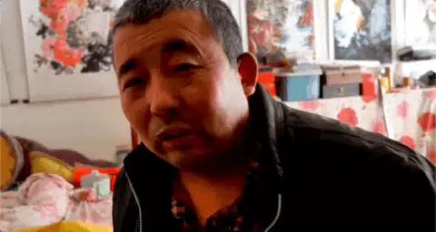
他的建议是，你需要结婚，需要在真实的人生中思考女性的魅力和力量。
二爹对于艺术，已不仅仅停留在表达上。
他对艺术有着自己哲学一般的思考和总结，比书本里的废话受用。
-03- 我与二爹
我是在很多人的帮助下长大的。
父亲给了我生命，爷爷奶奶、三爹给了我再造之恩。
而二爹给了我童年。
我小的时候，就喜欢找他玩。
在我看来，二爹和其他的成年人不同。
他始终有着孩童般的思考、表达和行为。
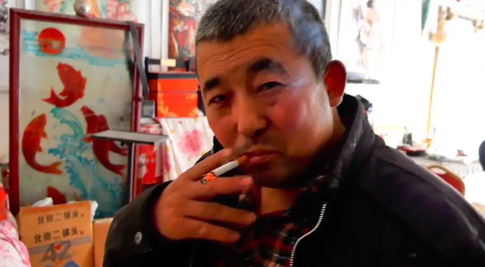
简而言之，我和他没有代沟。
小时候，我会跟着他到他刷家的主家里等他工作完，然后坐上他的自行车，吃个烤香肠。
也经常跟着他看恐怖片和港片。
他总是用他怪异的举动带给我很多欢乐......
这次回到老家，18个小时的拍摄，仿佛回到了从前。
这是一种非常舒服的状态。
我们开着玩笑，我再一次听着他的怪异想法和表达。
虽然很多年没有见，我们还是没有任何代沟。
甚至，我在暗暗惊叹，他的进步速度和对新事物的思考和学习，超过了我这个年轻人。
比如对于短视频的流行，我自己有一种倔强，并不觉得是好事情。
可二爹对于这个社会现象，却有着比我更宽广的胸襟。
他觉得这是好事还是坏事，不好说，但是这是时代的需求！
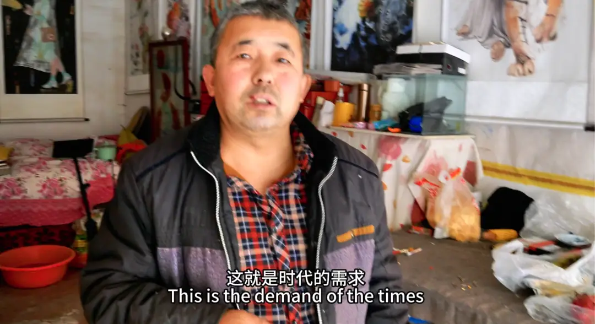
他坦然接受着这种时代的快，并且提出，如果你想让观众觉得精彩，那就要做到：开头精彩、中途精彩，然后马上死去。
18个小时，我们两都处于一种创作的状态。
二爹在不停地输出，我能get到他的点。
他也在我一个又一个问题的引导下，将他内心的思考和想法表达了出来。
我也在不断思考着，面对这么多的素材我该怎么去呈现。
随着大年三十，夜空中烟花的盛放。
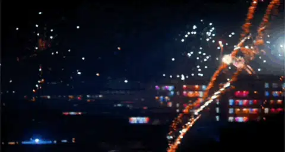
我豁然开朗，我喊着弟弟，让他拿好相机，而我自己拿了一把宝剑。
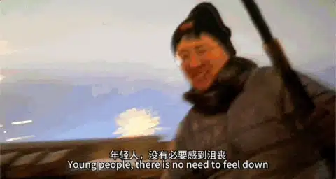
我隐隐觉得，这部纪录片的结构将会在神池的深夜中明朗。
我们两个，坐着二爹的电动三轮车，在夜晚零下二十度的神池街道里穿梭。
一直到凌晨五点多。
18个小时。
从他酒醉到酒醒。
二爹的话语表达从说个不停到最后的木纳。
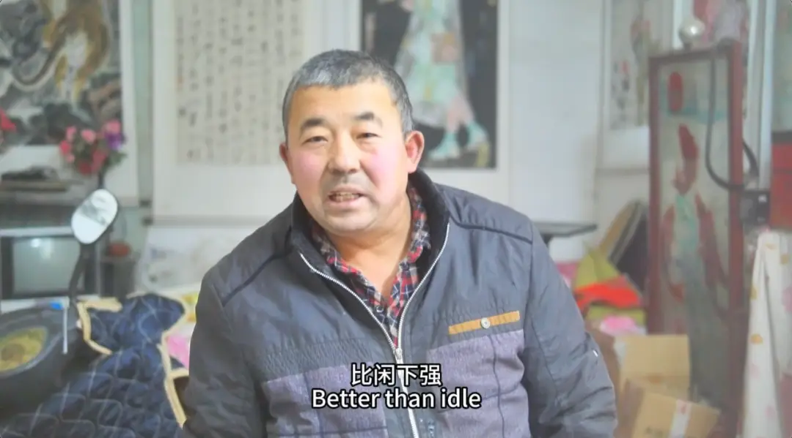
他的行为从喝酒吃肉、谈艺术到深夜里捡纸片子补贴家用。
纪录片的视听表达上。
从刚开始大家感受到的嘈杂，到中途的安静探讨艺术。
最后到全城烟花盛开的黑夜里，多了空镜头和音乐，给大家留下思考和共鸣的空间。
一切都是那么的自然和真实。
这18个小时，浓缩了二爹的一生。
就像二爹所说，他的人生如梦如醒，如梦如幻。
大年三十的夜晚里，《神池李白18时》呼之欲出。
-04- 土地与出路
任何伟大的艺术，都与艺术家自己生活的城市有着密不可分的关系。
艺术家成长的家乡，往往会成为其艺术的创作背景，以及情感和思考的源泉。
这一点非常重要。
二爹的艺术和丰富的内心世界，就离不开神池和他的家庭。
如果说中国城市化进程中最大的代价是什么。
我的答案是，年轻人逼不得已，走上了背井离乡、远离家族的不归路。
这个答案是我自己漂泊多个城市后的思考。
在我小的时候，家里人的引导是你需要好好读书，要考上好大学，要不然没有出路。
这是非常现实的选择。
2023年，神池县全体居民人均年可支配收入为20048元。
这个数字的背后，代表着年轻人基本没有好的工作机会和发展空间。
我也过去一直这样努力的，并且“成功”生活在一个距离神池很远的地方。
不过，那种原生土地的血脉、安全感、灵感和情感，是其他地方永远无法取代的。
在外面发展的孩子，我们的快乐与悲伤，无法用我们最习惯、最自然的方式去表达。
在外面，我们可以组建新的家庭，但却失去了和上一辈以及整个家族更深的羁绊和传承。
这是一件深深的遗憾。
而这种失去，如果变得广泛，就会造成一座城市文化的断层。
而神池，我认为就面临着这种失去。
我最近回去了两次，明显感觉到街上没有什么年轻人和小孩。
身边人的年轻人，也基本都在外面。
这也是我拍摄这部纪录片的深层次动机。
二爹的生活是不容易和艰辛的。
但是幸运的是，他能够在父母的身边和神池这片土地里，一直汲取着力量和养分。
并且可以用自己的画笔去抒发和表达。
这是令我羡慕的。
我希望《神池李白18时》能够把这个城市的活力、情感和精神记录下来。
这部纪录片里，地道的神池话、不加任何掩饰的红背心、二爹真真实实的故事以及神池过年夜的烟花，是充满力量的。
有谁能想到，在这个落寞的小县城里。
有一个人在寒冷的车库里，写着郑板桥的字，还设计了一个和观众非常高级的互动。
即使没有人会看到这幅字，他还是会自我欣赏。
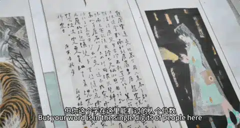
有谁能想到，在过去几十年间。
当大家看着春晚或者已经进入梦乡的时候。
有一个人年复一年，在寒冷刺骨的神池街道上，通宵捡纸片片。
这颗看上去渺小却无比炽热的火焰，一直在神池燃烧。
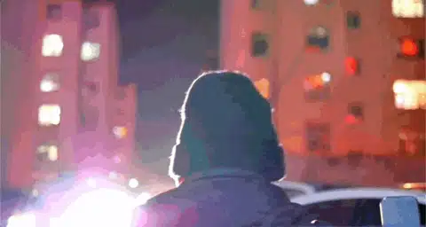
最美的、最戏剧性的、最有力量的春晚，一直在寒冷的神池街上上演。
这足以传递出神池人的情感和精神。
在这片苦寒之地，有那么多人像二爹一样靠着自己勤劳的双手维持着生计。
希望《神池李白18时》能带给大家力量和思考。
就像贾樟柯所说：
电影不仅是艺术，更是记录时代和社会变迁的工具。摄影机面对物质却审视精神，通过电影可以捕捉到那些被忽视的细节和情感。
李白的故事，比大城市的灯红酒绿更精彩。
李白的形象，没有大城市商业化的包装和套路，更具有神池原生的个性和狂野。
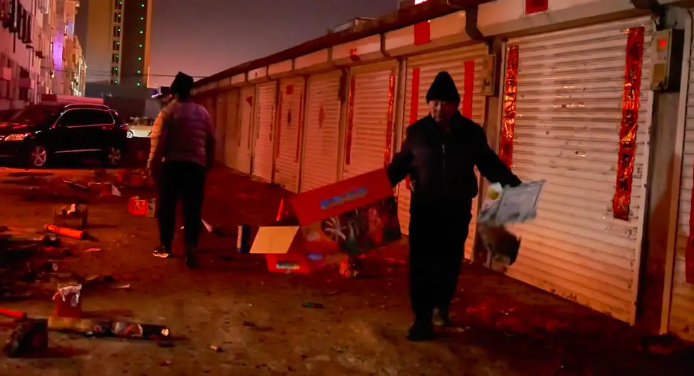
正因为此，《神池李白18时》是具有生命力的，因为他足够真实！
其他播放平台
▼
△快手

△抖音

△B站
长按保存到相册，然后扫码跳转
-END-
推荐阅读
▼
（点击文字即可获取全文）
神池李白18时
100双绝望的眼睛
这里没有挑逗你眼目情欲的小鲜肉
也没有挑动你肉体情欲的段子
更没有膨胀你今生骄傲的鸡血
我们只在乎那些最质朴真诚的作品
在那里我们才能恢复真正的想象力
我们也坚信这才是我们真正需要的

ID:Six_hundred_hits
长按二维码，一键关注
【六百击】
-END-
电影评论
尽情分享朋友圈